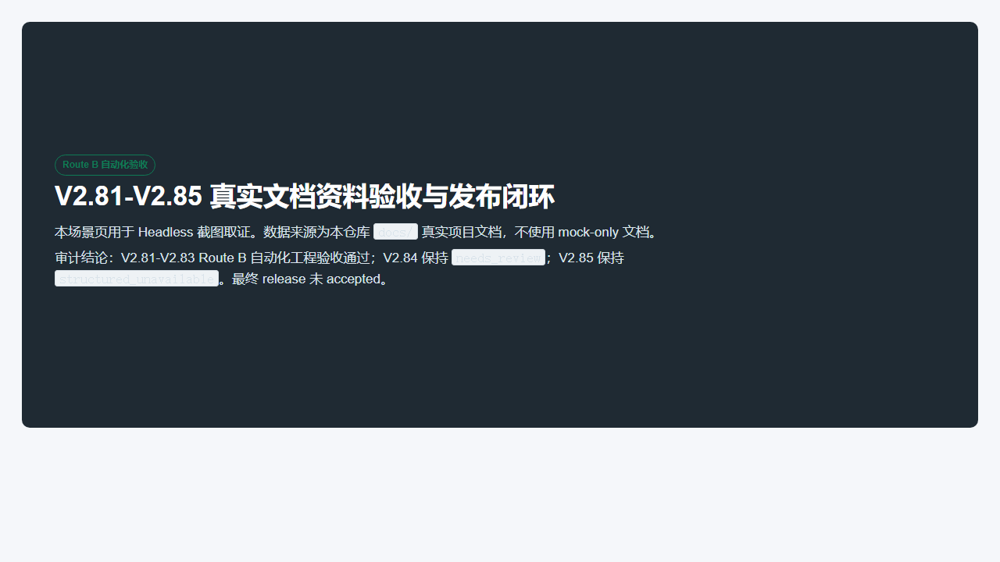
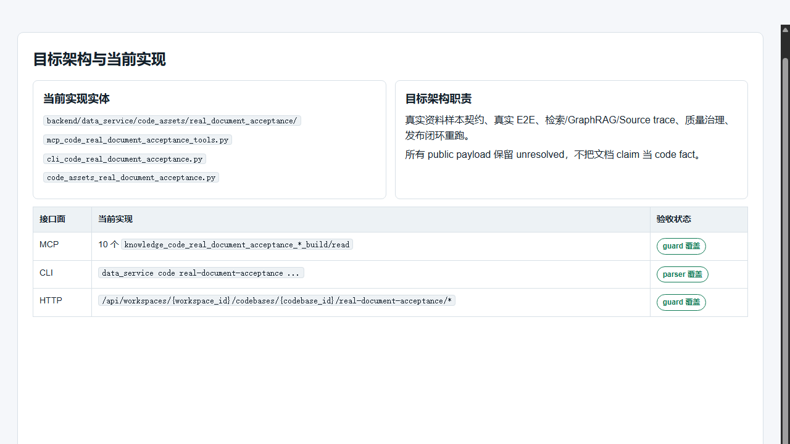
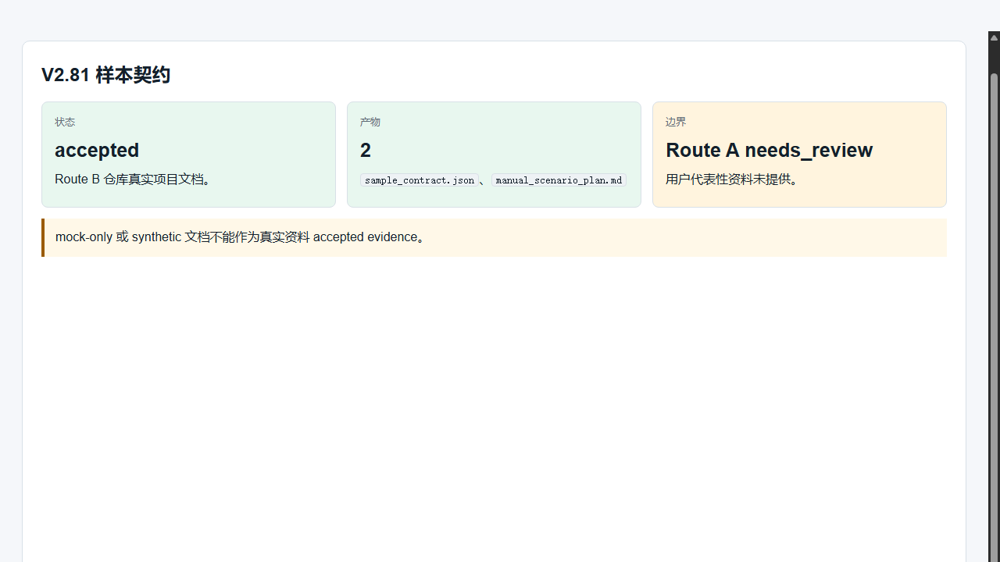
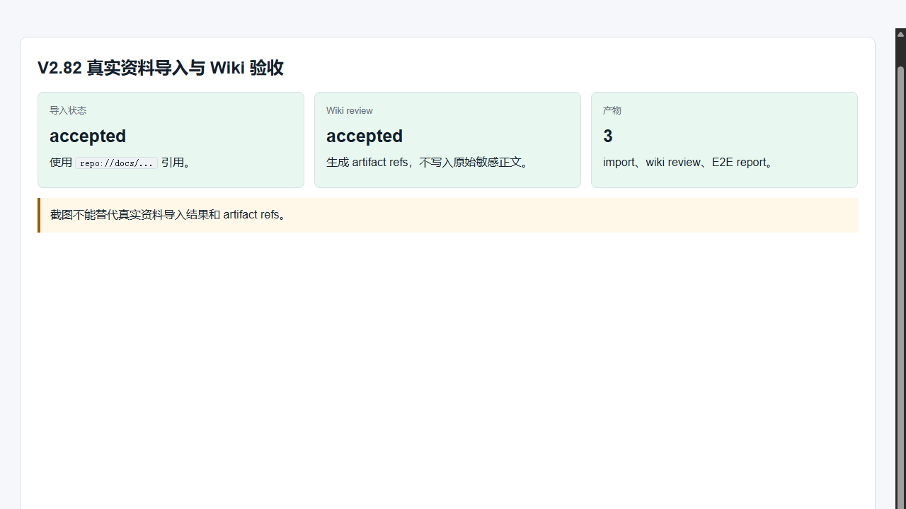
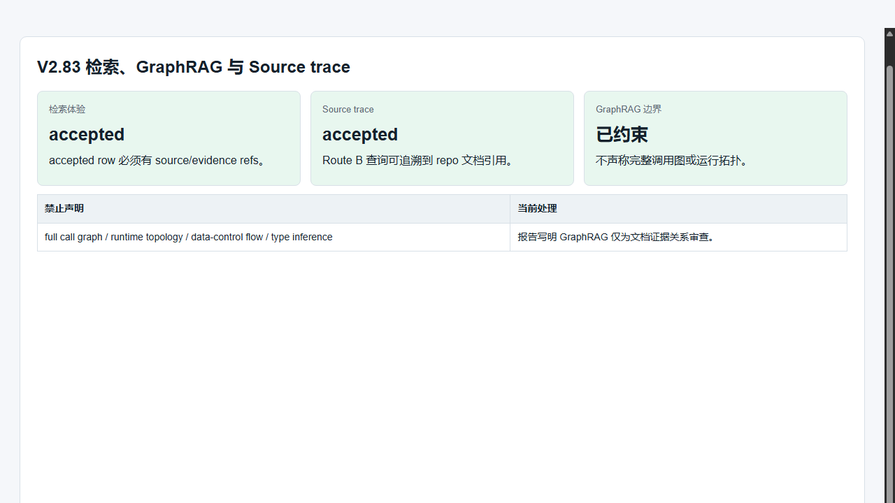
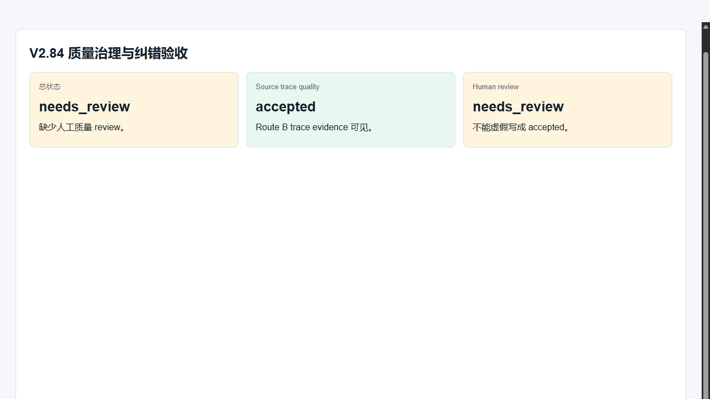
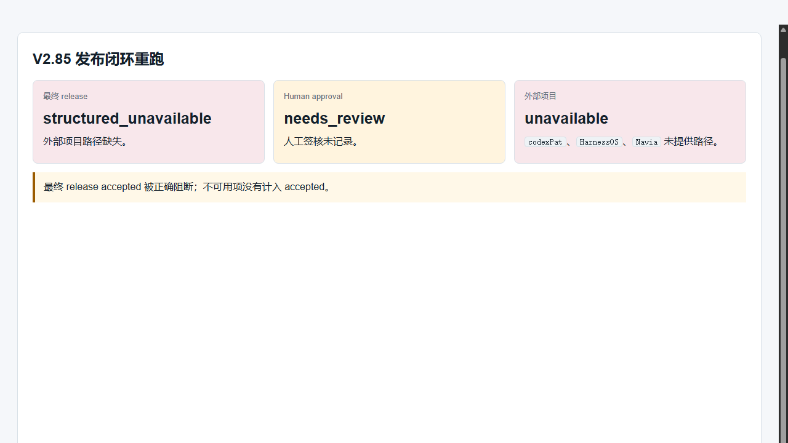
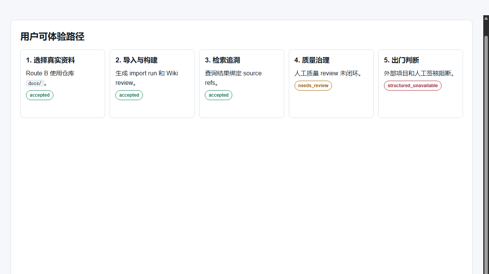

V2.81-V2.85 真实文档资料验收与发布闭环
本报告基于原始 PRD、目标架构、阶段审计文档、focused tests、真实仓库文档 Route B E2E 和 Headless 截图证据生成。报告只声明已有证据能支持的结论，不把文档描述、截图或 mock-only 内容当作实现事实。
验收结论
仓库 docs/ 真实项目文档已完成样本契约、导入/Wiki、检索/GraphRAG/Source trace 自动化验收。
质量治理链路保留人工质量 review 缺口，未虚假转为 accepted。
外部项目路径和 human approval 缺失，发布闭环保持 structured_unavailable。
审计充分性复核
初版报告判定
初版 HTML 能帮助快速理解目标体验、架构和截图证据，但不足以让人类完整、完全、完备地审计本阶段自动化开发。
原因：命令退出码、提交/远端同步、PRD 到测试映射、实现文件清单、protected 文件检查没有作为一等证据呈现。
补强后判定
已补充机器可复核证据日志、Route B 产物快照和审查充分性说明，本 HTML 与证据索引组合后可以支撑阶段级人工审计。
补强文件：visual_acceptance_assets/v2_81_85/verification_evidence_20260701.md
| 审计项 | 补强证据 | 状态 |
|---|---|---|
| 提交与远端同步 | 业务实现提交为 c89ad3f；审计证据补强提交为 1d90d47 和 601605f；证据日志中 HEAD...origin/main 为 0 0。 | 可复核 |
| focused tests | V2.81-V2.85 focused tests + public surface guard 退出码为 0。 | 可复核 |
| 构建与格式 | compileall、git diff --check 退出码为 0。 | 可复核 |
| 受保护文件 | git diff --name-only HEAD^ HEAD -- backend/app/api/v1/data_service.py backend/data_service/service.py 输出为空。 | 可复核 |
| 截图证据 | 8 张 PNG 均为 1280x720，由 headless Chrome 生成。 | 可复核 |
| Route B 产物快照 | 已提交到 visual_acceptance_assets/v2_81_85/route_b_artifacts/，并有 sha256 manifest。 | 可复核 |
| 最终发布边界 | V2.84 为 needs_review，V2.85 为 structured_unavailable。 | 未虚假放行 |
verification_evidence_20260701.md 生成时尚未加入 git，所以该日志的 git status --short 会显示该日志自身为 untracked。这是证据生成时序，不代表实现提交存在未提交业务代码。人类最短审计路径
| 步骤 | 审计动作 | 判断标准 |
|---|---|---|
| 1 | 先读 HUMAN_AUDIT_PACKET_INDEX.md。 | 确认审计范围、提交关系、不可放行边界。 |
| 2 | 打开本 HTML，查看结论、架构、截图、测试映射和 false-green 审计。 | 能快速判断 V2.81-V2.83 Route B 通过，V2.84/V2.85 未放行。 |
| 3 | 检查 route_b_artifact_snapshot_manifest.json 和 route_b_artifacts/。 | 确认 Route B 产物内容已提交，远端审计者无需依赖本机 workspace。 |
| 4 | 检查 verification_evidence_20260701.md。 | 确认 focused tests、compileall、diff check、截图尺寸和 protected 文件检查的退出码。 |
| 5 | 对照 PRD、Coverage Matrix、阶段验收报告。 | 确认没有把 needs_review、structured_unavailable 写成 accepted。 |
目标架构与当前实现
当前新增实现实体
backend/data_service/code_assets/real_document_acceptance/
backend/data_service/mcp_code_real_document_acceptance_tools.py
backend/data_service/cli_code_real_document_acceptance.py
backend/app/api/v1/code_assets_real_document_acceptance.py
目标架构职责
真实资料样本契约、真实文档 E2E、检索/GraphRAG/Source trace、质量治理审查、发布闭环重跑。
所有产物保留 needs_review、structured_unavailable 和 evidence refs。
| 接口面 | 实现情况 | 审计结论 |
|---|---|---|
| MCP | knowledge_code_real_document_acceptance_*_build/read | public surface guard 覆盖 |
| CLI | python -m data_service code real-document-acceptance ... | parser 与 focused tests 覆盖 |
| HTTP | /api/workspaces/{workspace_id}/codebases/{codebase_id}/real-document-acceptance/* | 独立 route，未改 legacy 大文件 |
阶段验收矩阵
| 阶段 | 用户可感知体验 | 状态 | 证据与边界 |
|---|---|---|---|
| V2.81 | 维护者确认真实资料样本、脱敏和截图标准。 | Route B accepted | 仓库真实文档样本契约已生成；Route A 用户资料仍 needs_review。 |
| V2.82 | 维护者看到真实资料导入、Wiki artifact 与 E2E 报告。 | Route B accepted | 使用 repo://docs/... 引用，不使用 mock-only 文档。 |
| V2.83 | 维护者可查看查询结果、GraphRAG 摘要和来源追溯。 | Route B accepted | 只做文档证据关系审查，不声明 full call graph 或 runtime topology。 |
| V2.84 | 维护者查看质量治理和纠错建议。 | needs_review | 缺少人工质量 review，不能 accepted。 |
| V2.85 | 维护者查看发布闭环重跑和出门判断。 | structured_unavailable | 外部项目路径与 human approval 缺失，最终 release 不放行。 |
真实数据与产物证据
真实 Route B 数据来自本仓库文档目录，生成产物位于工作区运行产物目录，不作为最终发布 accepted 的替代证据。
为支持远端人类审计，已将脱敏后的 Route B 产物快照提交到 docs/V2.x/visual_acceptance_assets/v2_81_85/route_b_artifacts/，校验清单见 route_b_artifact_snapshot_manifest.json。
自动化截图证据
优先使用 Headless。Linux Playwright Chromium 因缺少 libnspr4.so 无法启动，随后使用 Windows Chrome headless 方式截图；截图过程没有打开可见浏览器窗口。








执行命令与检查
截图完整性检查：8 张 PNG 均为 1280x720，像素统计非空白。证据索引见 docs/V2.x/visual_acceptance_assets/v2_81_85/visual_evidence_manifest.json。
完整命令输出与退出码见 docs/V2.x/visual_acceptance_assets/v2_81_85/verification_evidence_20260701.md。该日志用于人类审计，不替代真实用户代表性资料验收。
PRD 到测试覆盖映射
| PRD 能力 | 测试文件 | 审计说明 |
|---|---|---|
| 真实资料样本契约 | backend/tests/test_v2_81_real_document_sample_contract.py | 验证样本来源、脱敏说明、manual scenario 和 Route A needs_review。 |
| 真实资料导入与 Wiki artifact | backend/tests/test_v2_82_real_document_import_wiki.py | 验证仓库真实文档导入、artifact refs 和 wiki review。 |
| 检索、GraphRAG、Source trace | backend/tests/test_v2_83_retrieval_graphrag_source_trace.py | 验证 source refs 保留，并禁止完整调用图或运行拓扑声明。 |
| 质量治理与纠错 | backend/tests/test_v2_84_quality_governance_real_document.py | 验证人工质量 review 缺失时保持 needs_review。 |
| 发布闭环重跑 | backend/tests/test_v2_85_release_closure_rerun.py | 验证外部项目路径和 human approval 缺失时保持 structured_unavailable。 |
| 对外接口稳定性 | backend/tests/test_public_surface_guard.py | 验证 MCP、CLI、HTTP surface 被 guard 覆盖。 |
实现变更清单
受保护 legacy 文件 backend/app/api/v1/data_service.py 与 backend/data_service/service.py 未进入本阶段提交变更列表。
PRD / 规格检视
| PRD 要求 | 当前结论 |
|---|---|
| 使用真实文档资料验收，不做虚假验收。 | Route B 使用本仓库 docs/ 真实项目文档；未提供用户代表性 Route A 文档，因此 Route A 不 accepted。 |
| 保留 unresolved 状态。 | needs_review、structured_unavailable 均保留在阶段报告和本报告中。 |
| GraphRAG 与 Source trace 不做过度承诺。 | 报告明确不声明 full call graph、runtime topology、data/control flow 或 type inference。 |
| 最终发布需要外部项目状态和 human approval。 | 缺少 codexPat、HarnessOS、Navia 路径和 human approval，最终 release 阻断。 |
| 保护 legacy 大文件。 | 新增独立模块和 adapter，最终命令包含 protected diff check。 |
False-green 审计
已防止
没有把 mock-only、截图文案或文档 claim 当作 accepted code fact。
仍需人工处理
用户代表性真实资料、人类质量 review、human release approval。
阻断项
外部项目真实路径缺失，最终 release 不能 accepted。
审计文件索引
| 文件 | 用途 |
|---|---|
docs/V2.x/V2_81_85_REAL_DOCUMENT_ACCEPTANCE_RELEASE_CLOSURE_FINAL_ACCEPTANCE_AUDIT_REPORT.md | 阶段最终验收审计。 |
docs/V2.x/V2_81_85_REAL_DOCUMENT_ACCEPTANCE_RELEASE_CLOSURE_FULL_COVERAGE_MATRIX.md | PRD 能力、artifact 和验收状态矩阵。 |
docs/V2.x/V2_81_85_REAL_DOCUMENT_ACCEPTANCE_RELEASE_CLOSURE_DOCUMENT_AUDIT_REPORT.md | 文档一致性和支撑度审计。 |
docs/V2.x/V2_81_85_REAL_DOCUMENT_ACCEPTANCE_RELEASE_CLOSURE_VISUAL_ACCEPTANCE_REPORT.html | 本可视化验收报告。 |
docs/V2.x/visual_acceptance_assets/v2_81_85/visual_evidence_manifest.json | 截图和运行证据索引。 |
docs/V2.x/visual_acceptance_assets/v2_81_85/verification_evidence_20260701.md | 命令、退出码、提交同步、protected 文件和截图尺寸证据日志。 |
docs/V2.x/visual_acceptance_assets/v2_81_85/route_b_artifact_snapshot_manifest.json | 已提交 Route B 产物快照的 hash、大小和脱敏扫描说明。 |
docs/V2.x/V2_81_85_REAL_DOCUMENT_ACCEPTANCE_RELEASE_CLOSURE_HUMAN_AUDIT_PACKET_INDEX.md | 人类审计路径索引，说明应按什么顺序复核本阶段自动化开发。 |
docs/V2.x/V2_81_85_REAL_DOCUMENT_ACCEPTANCE_RELEASE_CLOSURE_VISUAL_REPORT_AUDIT_REVIEW.md | 本 HTML 报告的充分性复核和修复说明。 |